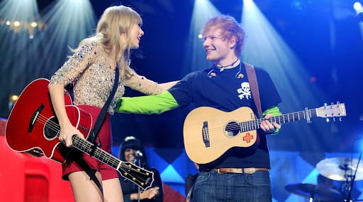

REWIND: A Look at Ed Sheeran’s
Music Throughout the Years
With Ed’s newest single, “Bad Habits” set to be released on June 25th, which is his first one since the last four years, we thought it’d be great to look back and see how one guy born from the U.K., managed to capture millions of hearts and become one of the best-selling artists of all time.
Sheeran’s Starting Point
Ed Sheeran is a prominent musician throughout the generations of Millennials and Generation Z. He captivated a lot of hearts through his music that gave listeners butterflies and romantic connections to their lovers and crushes. He started as a small and independent musician way back 2004 and has gained fame in 2011.
He became famous in 2011 with his album “The A Team”. He started with playing his guitar and started a YouTube channel, this is where he got fans and got famous too. Ed Sheeran has gained a compliment on Independent newspaper and the famous Elton John. Sheeran didn’t take a long time to start recording and distributing CDs, and he soon released his first professional EP, The Orange Room. He moved to London for the summer at the age of 14 because of that achievement and his genuine ambition, and then he played his debut single “The A Team” on the TV music show later with Jools Holland on April 26, 2011.
“The A Team” was published as a digital download in the UK six weeksafter. Ed’s debut studio album,+ included the song as the lead single.
Various Albums Throughout the Years
On 2011, (+) or his Plus album was released that contained 12 songs which are the following: The A Team, Drunk, UNI, Grade 8, Wake Me Up, Small Bump, This, The City, Lego House, You Need Me, I Don’t Need You, Kiss Me, and Give Me Love. His Plus album really got famous after he released it because of the mellow songs, but full of loving lyrics that got the attention of the fans. Many people relate to his lyrics, especially Lego House. It has a message of a relationship that is struggling and an individual is trying to fix their relationship and save it from ending.
Notable Songs of Ed Sheeran
Shape of You, Perfect, Thinking Out Loud, Photograph, Don’t, Lego House, Supermarket Flowers, Tenerife Sea, Galway Girl, Bibia Be Ye Ye, Dive, and Nancy Mulligan. Most of Ed Sheeran’s Songs are from his + or Plus album due to heartbreaking and loving stories of various relationships. Mostly his songs that become famous, has left a mark on the generation because of its continuous play in the streets.
Sheeran’s songs have various meanings like in his childhood, family, and love relationships. Mostly his songs are about love, and that mainly attracts his fans too. Ed Sheeran also has collaborated with various famous artists like Justin Bieber, Bruno Mars, Camilla Cabello, Nicki Minaj, and others. Personally, Dive is a great song because of conviction that is evident in his voice. He left a message saying that you should not enter a relationship if you are not ready and to prevent heartbreaks. He dedicates the song to the people who are also afraid of rejections in life. Also Bibia Be Ye Ye, which has a giddy and happy tune that gives a mellow beach vibe for the listeners.